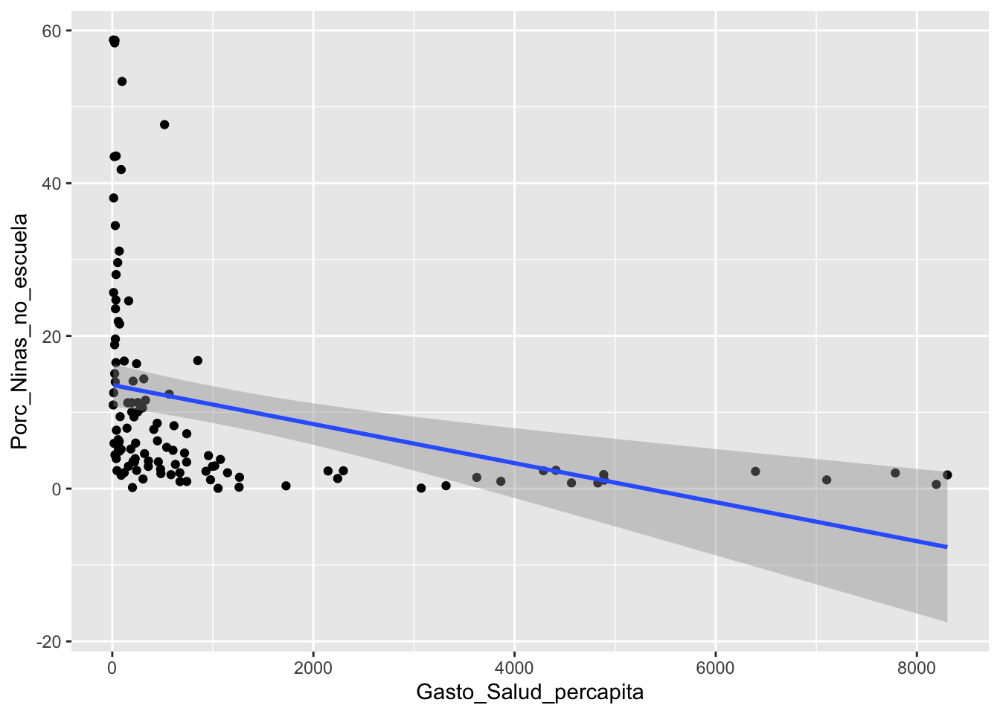
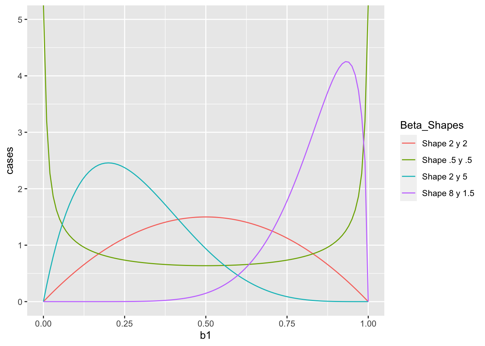
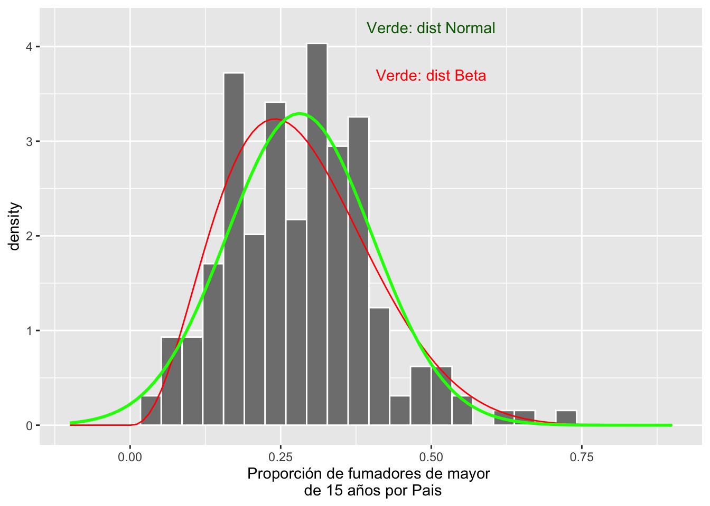
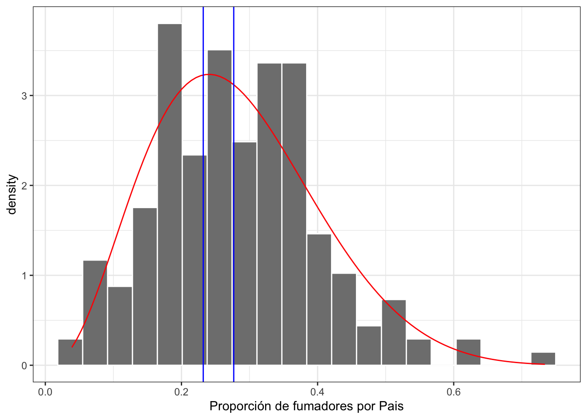
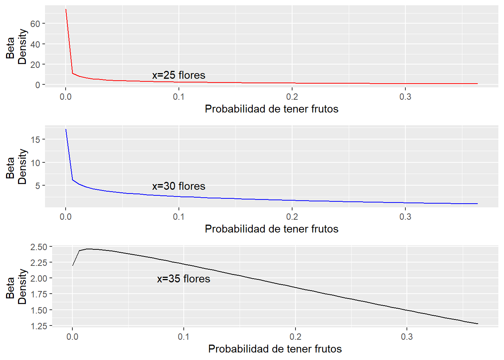
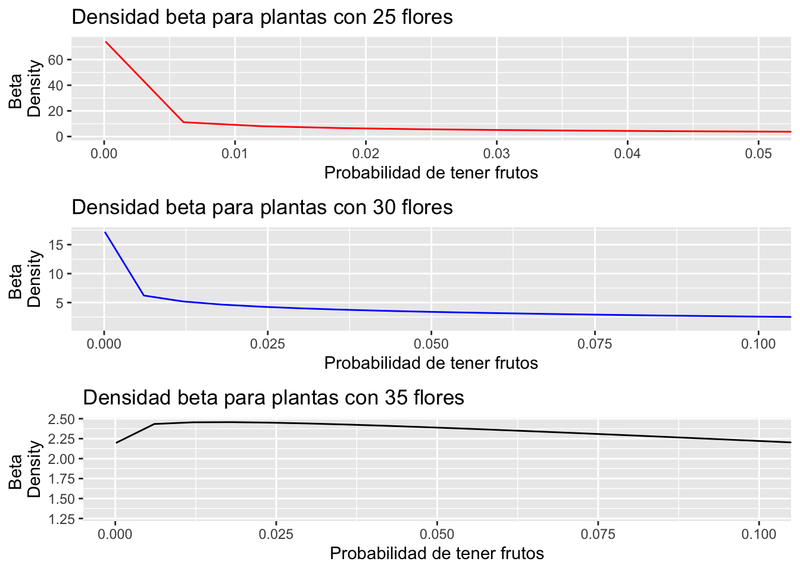
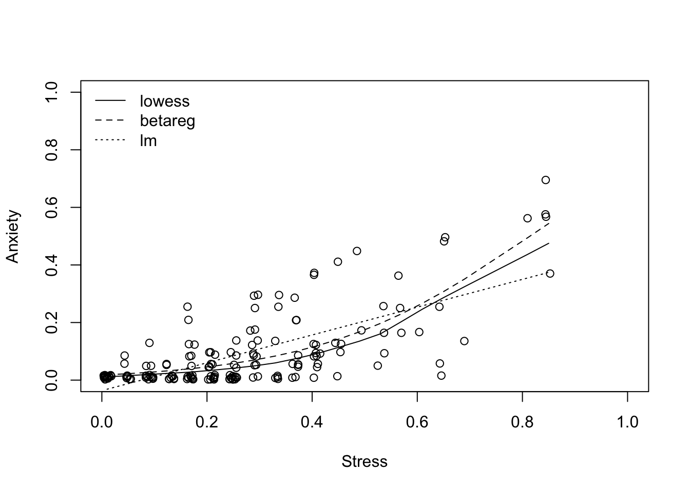

Regressión beta

 #Un cambio para modificar los gráficos
#Un cambio para modificar los gráficos
Regressión beta
El método presentado aquí es bastante innovador (2010 en adelante). Desafortunadamente no hay mucha información en la literatura o el web sobre el método. Puede encontrar información suplementaria en el Vignette del paquete betareg.
Referencias:
Cribari-Neto, F., and Zeileis, A. (2010). Beta Regression in R. Journal of Statistical Software, 34(2), 1–24. http://www.jstatsoft.org/v34/i02/.
Grün, B., Kosmidis, I., and Zeileis, A. (2012). Extended Beta Regression in R: Shaken, Stirred, Mixed, and Partitioned. Journal of Statistical Software, 48(11), 1–25. http://www.jstatsoft.org/v48/i11/.
Articulo sobre regresión beta y diferentes paquetes de R que se puede usar para hacer los análisis Douma and Weedon 2019
¿Qué es la Regresión beta?
La regresión beta es una aproximación bajo GLM “Modelos lineales generalizado”. La regresión beta modela variables dependientes distribuidas con la distribución beta. Datos con la distribución beta incluyen proporciones y razones, donde los valores \(x\) se encuentran entre 0 y 1 pero no inclusivo (i.e. \(0 < x< 1\)). Además de producir una regresión que máxima la verosimilitud (tanto para la media como para la precisión de una respuesta distribuida en beta), se proporcionan estimaciones con corrección de sesgo.
Los valores de la variable de respuesta satisfacen \(0 < x < 1\). Por consecuencia si tiene valores que son 0 o 1, es necesario cambiarlos a \(0= 0.001\) y \(1 = 0.999\). Los números no pueden ser 0 ni 1, deben ser mayores que 0 y menores que 1. Efectivamente a cambiar los los valores a \(0.001\) y \(0.999\) no tiene impacto sobre la interpretación de los datos, al menos que todos sus datos son solamente \(0\) ó \(1\), en este caso no se debería usar esta herramienta pero una regresión logística.
El paquete “betareg” y sus datos. Tenga en cuenta que el enfoque del modelo GLM es desarrollar una regresión con la respuesta a través de una función de enlace y un predictor lineal. Igual como GLM normal, existen numerosas funciones de enlace, que pueden ser útil como “logit”, “probit”, “cloglog”, “cauchit”, “log”, “loglog” para linearizar los datos.
Casi toda la información que se estará presentando aquí proviene de Cribari-Neto y Zeileis (Beta Regression in R).
Consulte el pdf, https://cran.r-project.org/web/packages/betareg/betareg.pdf para obtener una descripción del paquete y más detalles.
Estaré usando datos diferentes a lo que se presenta en el paquete para demostrar el valor de los análisis.
Errores típicos de análisis con datos que son fracciones.
Miramos un ejemplo. Aquí la relación entre el gasto se salud publica per capita en 156 paises y el porcentaje de niñas que no están en la escuela.
Datos del “World Development Agency”
Que es lo que obseva que no tienen sentido?
library(ggversa)
#Edu_Salud_Gastos_GDP
ggplot(Edu_Salud_Gastos_GDP, aes(Gasto_Salud_percapita, Porc_Ninas_no_escuela))+
geom_point()+
geom_smooth(method = lm)## `geom_smooth()` using formula 'y ~ x'## Warning: Removed 46 rows containing non-finite values (stat_smooth).## Warning: Removed 46 rows containing missing values (geom_point).
Nota: - hay valores de proporciones negativa - el intervalo de confianza también es negativo - la dispersión de los datos en y alrededor de la media no es igual a medida que el gasto de salud per capita cambia (en x).
Los modelos usando la distribución beta resuelve estos asuntos.
Primer paso, que es una distribución beta?
Lo más importante de la distribución beta es que los valores NUNCA son menores de 0 ni mayores de 1 (i.e. \(0 < x < 1\)). En adición los intervalos de confianza tampoco no pueden ser ni menor de 0 ni mayor de 1.
Se construye múltiples conjuntos de datos con distribuciones beta distinta, para evaluar como se ve la distribuciones, nota que aquí los parametros no son el promedio y la sd, pero dos parámetros que se llama shape.
Aquí una serie de distribuciones beta. La distribución beta se calcula con dos parametros, shape 1 o \(\alpha\) y shape 2 o \(\beta\). No vamos a entrar en estos parámetros, aunque pueden ir a la pagina de Wikipedia para tener más información. Deben fijarse en que si los parámetros no sin iguales (\(\alpha \neq \beta\)) la distribución no es simétrica. Siempre hay una cola que se extiende en los valores pequeños o grandes.

Wikipedia
En la pagina de Wikipedia sobre distribución beta se puede apreciar como la distribución cambian cuando varia los parametros

Propoción de fumadores por diferentes paises.
Los datos provienen de World Bank en el siguiente enlace, Smokers. Se encuentra información sobre 187 pais y la proporción de población mayor de 15 años que fuman.
Los datos están debajo pestaña de “Los Datos”
library(readr)
Proportion_smokers_world <- read_csv("Data/Proportion_smokers_world.csv")## Rows: 187 Columns: 13
## ── Column specification ────────────────────────────────────────────────────────
## Delimiter: ","
## chr (4): Country_Name, Country_Code, Indicator_Name, Indicator_Code
## dbl (9): Y2000, Y2005, Y2010, Y2011, Y2012, Y2013, Y2014, Y2015, Y2016
##
## ℹ Use `spec()` to retrieve the full column specification for this data.
## ℹ Specify the column types or set `show_col_types = FALSE` to quiet this message.Smokers=Proportion_smokers_world
gt(head(Smokers))| Country_Name | Country_Code | Indicator_Name | Indicator_Code | Y2000 | Y2005 | Y2010 | Y2011 | Y2012 | Y2013 | Y2014 | Y2015 | Y2016 |
|---|---|---|---|---|---|---|---|---|---|---|---|---|
| Honduras | HND | Smoking prevalence, total (ages 15+) | SH.PRV.SMOK | 3.9 | 3.1 | 2.5 | 2.4 | 2.4 | 2.3 | 2.2 | 2.1 | 2.0 |
| Ethiopia | ETH | Smoking prevalence, total (ages 15+) | SH.PRV.SMOK | 4.8 | 4.6 | 4.5 | 4.4 | 4.5 | 4.4 | 4.4 | 4.4 | 4.4 |
| Congo, Rep. | COG | Smoking prevalence, total (ages 15+) | SH.PRV.SMOK | 5.7 | 9.1 | 14.7 | 16.1 | 17.9 | 19.8 | 22.0 | 24.2 | 26.9 |
| Ghana | GHA | Smoking prevalence, total (ages 15+) | SH.PRV.SMOK | 5.9 | 5.0 | 4.4 | 4.3 | 4.3 | 4.1 | 4.1 | 4.0 | 3.9 |
| Niger | NER | Smoking prevalence, total (ages 15+) | SH.PRV.SMOK | 6.4 | 6.7 | 7.1 | 7.2 | 7.3 | 7.4 | 7.5 | 7.6 | 7.7 |
| Nigeria | NGA | Smoking prevalence, total (ages 15+) | SH.PRV.SMOK | 7.7 | 7.0 | 6.3 | 6.2 | 6.1 | 6.1 | 5.9 | 5.8 | 5.8 |
Primero vamos a convertir los datos en proporción ya que el programa tiene que utilizar datos mayor de 0 y menor de 1. Seleccionamos el año 2000 y creamos un histograma de la distribución.
Smokers$Y2000P=(Smokers$Y2000)/100 # convertir en proporción
Smokers %>% select(Country_Name, Y2000P)## # A tibble: 187 × 2
## Country_Name Y2000P
## <chr> <dbl>
## 1 Honduras 0.039
## 2 Ethiopia 0.048
## 3 Congo, Rep. 0.057
## 4 Ghana 0.059
## 5 Niger 0.064
## 6 Nigeria 0.077
## 7 Oman 0.082
## 8 Barbados 0.083
## 9 Eritrea 0.087
## 10 Benin 0.091
## # … with 177 more rowsConvertir el promedio y varianza en shape \(\alpha\) y \(\beta\)
Convertir el promedio y la varianza de los datos en los valores del shape \(\alpha\) y \(\beta\). Se usa la siguiente para calcular los shapes. Los valores esperado y la varianza se comportan de forma distinta.
\[E(X) = \frac{\alpha}{\alpha+\beta}\]
\[V(X) = \frac{\alpha\beta}{(\alpha+\beta+1)(\alpha+\beta)^2}\]
Usando el promedio y varianza se puede convertir en \(\alpha\) y \(\beta\) con la siguiente ecuaciones
\[\alpha = \frac{1-mu}{(var-1)/mu}*mu^2\] \[\beta = \alpha*(\frac{1}{mu}-1)\] Aquí un script para convertir los parametros en shape
estBetaParams <- function(mu, var) {
alpha <- ((1 - mu) / var - 1 / mu) * mu ^ 2
beta <- alpha * (1 / mu - 1)
return(params = list(alpha = alpha, beta = beta))
}
#mean(Smokers$Y2000P)
#var(Smokers$Y2000P)
estBetaParams((mean(Smokers$Y2000P)), (var(Smokers$Y2000P)))## $alpha
## [1] 3.592488
##
## $beta
## [1] 9.181559Ahora comparamos la distribución beta y normal de los datos de los fumadores de mayores de 15 años
Smokers$Y2000P=(Smokers$Y2000)/100 # convertir en proporción
x <- seq(0, 1, len = 100)
#mean(Smokers$Y2000P)
#var(Smokers$Y2000P)
ggplot(Smokers, aes(Y2000P))+
geom_histogram(aes(y=..density..), colour="white", fill="grey50")+
stat_function(aes(x = Smokers$Y2000P, y = ..y..), fun = dbeta, colour="red", n = 100,
args = list(shape1 = 3.593, shape2 = 9.185))+
stat_function(fun = dnorm,
args = list(mean = mean(Smokers$Y2000P, na.rm = TRUE),
sd = sd(Smokers$Y2000P, na.rm = TRUE)),
colour = "green", size = 1)+
xlab("Proporción de fumadores de mayor \n de 15 años por Pais")+
annotate("text", x = .5, y = 4.2, label = "Verde: dist Normal", color="darkgreen")+
annotate("text", x = .5, y = 3.7, label = "Verde: dist Beta", color="red")+
xlim(-0.1, 0.9)## `stat_bin()` using `bins = 30`. Pick better value with `binwidth`.## Warning: Removed 2 rows containing missing values (geom_bar).
Calculando el intervalo de confianza del promedio de una distribución beta. Se necesita los siguientes paquetes simpleboot , boot.
library(simpleboot)## Simple Bootstrap Routines (1.1-7)library(boot) # paquete para calcular el intervalo de confianza de una distribución beta
n=187 # El tamaño de muestra de los datos
alpha = 3.593 # estimado de la función arriba
beta = 9.185
x = rbeta(n, alpha, beta)
x.boot = one.boot(x, median, R=10^4) # Aquí se usa la mediana, pq el promedio *mean* sera sesgado a la derecha.
boot.ci(x.boot, type="bca")## BOOTSTRAP CONFIDENCE INTERVAL CALCULATIONS
## Based on 10000 bootstrap replicates
##
## CALL :
## boot.ci(boot.out = x.boot, type = "bca")
##
## Intervals :
## Level BCa
## 95% ( 0.2361, 0.2948 )
## Calculations and Intervals on Original ScaleVisualización de la distribución
Sobreponemos el intervalo de confianza de la mediana sobre la distribución beta
ggplot(Smokers, aes(Y2000P))+
geom_histogram(aes(y=..density..), bins=20, colour="white", fill="grey50")+
stat_function(aes(x = Smokers$Y2000P, y = ..y..), fun = dbeta, colour="red", n = 100,
args = list(shape1 = 3.593, shape2 = 9.185))+
geom_vline(xintercept =0.2320, colour="blue")+ # El intervalo de confianza del promedio
geom_vline(xintercept =0.2768, colour="blue")+
rlt_theme+
xlab("Proporción de fumadores por Pais")
library(betareg) # El paquete para hacer regresión beta
library(ggversa) # paquete para los datos
attach(dipodium)
head(dipodium, n=4)## # A tibble: 4 × 21
## `Tree Number` `Tree species` DBH `Plant number` `Ramet number` Distance
## <int> <chr> <dbl> <int> <int> <dbl>
## 1 1 E.o 75 1 1 2.47
## 2 1 E.o 76 2 1 1.97
## 3 2 E.o 76 3 1 1.95
## 4 3 E.o 58 4 1 3.24
## # … with 15 more variables: Orientation <dbl>, Number_of_Flowers <int>,
## # Height_Inflo <int>, Herbivory <chr>, RowPosition_NF <int>,
## # Number_Flowers_position <int>, Number_of_fruits <int>, Perc_FR_set <dbl>,
## # pardalinum_or_roseum <chr>, Fruit_position_effect <int>,
## # Frutos_si_o_no <int>, P_or_R_Infl_Lenght <chr>, `Num of fruits` <int>,
## # Species_Name <chr>, `Cardinal orientation` <int>Regresión beta, proporción de frutos por cantidad de flores

from this webpage: https://binalongbungalows.wordpress.com/tasmanian-orchids/dipodium-roseum-rosy-hyacinth-orchid-0615-web/
Ahora haremos el primer análisis de regresión donde nuestra respuesta es una proporción.
Los datos provienen de una especie de orquidea de Australia, Dipodium roseum, recolectado por RLT en 2004-2005. Vamos a evaluar la relación entre el número de flores y la proporción de frutos por planta. El primer paso es asegarar que no haya valores de 0 y 1. En este caso no hay ni una planta que tiene 100% de frutos, pero si hay individuos que tienen cero frutos.
RECUERDA x >0 y <1. NO se acepta 0 o 1. Entonces a los valores de 0 se le puede añadir un valor mínimo como 0.001 y a los 1 restar 0.001. En realidad esta modificación no impacta la interpretación de los resultados.
se remueva también del archivo los NA.
Nota que el modelo se construye como un modelo lineal betareg(y~x, data =na.omit(df)). Las variables del archivo son PropFR, el proporción de frutos (número de frutos/números de flores) por cada individuo y el número de flores, Number_of_Flowers.
#head(dipodium)
library(tidyverse)
dipodium$PropFR=dipodium$Perc_FR_set+0.0001 # solucionar para remover los cero
#dipodium$PropFR
dipodium2=dipodium %>%
select(PropFR, Number_of_Flowers,Height_Inflo, Distance) %>%
filter(complete.cases(PropFR, Number_of_Flowers,Height_Inflo, Distance))
#dipodium2
write.csv(x=dipodium2, file="dipodium2.csv")
library(readr)
dipodium2 <- read_csv("Data/dipodium2.csv")## New names:
## * `` -> ...1## Rows: 62 Columns: 5
## ── Column specification ────────────────────────────────────────────────────────
## Delimiter: ","
## dbl (5): ...1, PropFR, Number_of_Flowers, Height_Inflo, Distance
##
## ℹ Use `spec()` to retrieve the full column specification for this data.
## ℹ Specify the column types or set `show_col_types = FALSE` to quiet this message.modelpropFr=betareg(PropFR~Number_of_Flowers+Height_Inflo+Distance, data =na.omit(dipodium2))
summary(modelpropFr)##
## Call:
## betareg(formula = PropFR ~ Number_of_Flowers + Height_Inflo + Distance,
## data = na.omit(dipodium2))
##
## Standardized weighted residuals 2:
## Min 1Q Median 3Q Max
## -3.8613 -0.4046 0.2672 0.8535 1.2798
##
## Coefficients (mean model with logit link):
## Estimate Std. Error z value Pr(>|z|)
## (Intercept) -3.796016 0.727139 -5.220 1.78e-07 ***
## Number_of_Flowers 0.076200 0.028247 2.698 0.00698 **
## Height_Inflo 0.006054 0.017847 0.339 0.73444
## Distance -0.111010 0.093825 -1.183 0.23674
##
## Phi coefficients (precision model with identity link):
## Estimate Std. Error z value Pr(>|z|)
## (phi) 4.8382 0.9982 4.847 1.25e-06 ***
## ---
## Signif. codes: 0 '***' 0.001 '**' 0.01 '*' 0.05 '.' 0.1 ' ' 1
##
## Type of estimator: ML (maximum likelihood)
## Log-likelihood: 113.9 on 5 Df
## Pseudo R-squared: 0.2757
## Number of iterations: 19 (BFGS) + 2 (Fisher scoring)Visualizar un gráfico de regresión beta
dipodiumbeta=dipodium2[,c("Number_of_Flowers","PropFR")] # crear un df con solamente las columnas de interes
dp2=dipodiumbeta[complete.cases(dipodiumbeta),] # remover los "NA"
modelpropFr=betareg(PropFR~Number_of_Flowers, data=dp2) # El modelo con solamente la explicativa
summary(modelpropFr)##
## Call:
## betareg(formula = PropFR ~ Number_of_Flowers, data = dp2)
##
## Standardized weighted residuals 2:
## Min 1Q Median 3Q Max
## -3.3221 -0.3181 0.2414 0.8225 1.2346
##
## Coefficients (mean model with logit link):
## Estimate Std. Error z value Pr(>|z|)
## (Intercept) -3.88360 0.44251 -8.776 < 2e-16 ***
## Number_of_Flowers 0.08259 0.01803 4.581 4.62e-06 ***
##
## Phi coefficients (precision model with identity link):
## Estimate Std. Error z value Pr(>|z|)
## (phi) 4.6947 0.9699 4.84 1.3e-06 ***
## ---
## Signif. codes: 0 '***' 0.001 '**' 0.01 '*' 0.05 '.' 0.1 ' ' 1
##
## Type of estimator: ML (maximum likelihood)
## Log-likelihood: 112.9 on 3 Df
## Pseudo R-squared: 0.2538
## Number of iterations: 18 (BFGS) + 1 (Fisher scoring) #head(dp2)
#dp2$PropFR
predict(modelpropFr, type = "response") # calcular los valores estimados (predichos)## 1 2 3 4 5 6 7
## 0.02568523 0.02783519 0.03015954 0.04856508 0.05679268 0.05679268 0.05679268
## 8 9 10 11 12 13 14
## 0.06138242 0.06138242 0.06138242 0.06138242 0.06138242 0.06138242 0.06631700
## 15 16 17 18 19 20 21
## 0.06631700 0.07161801 0.07161801 0.07161801 0.07161801 0.07730766 0.07730766
## 22 23 24 25 26 27 28
## 0.07730766 0.08340872 0.08340872 0.08994433 0.08994433 0.08994433 0.08994433
## 29 30 31 32 33 34 35
## 0.09693789 0.10441284 0.10441284 0.10441284 0.10441284 0.10441284 0.11239245
## 36 37 38 39 40 41 42
## 0.11239245 0.12089957 0.12089957 0.12089957 0.12089957 0.12089957 0.12089957
## 43 44 45 46 47 48 49
## 0.12995632 0.12995632 0.12995632 0.12995632 0.12995632 0.13958381 0.14980172
## 50 51 52 53 54 55 56
## 0.14980172 0.14980172 0.17207828 0.17207828 0.17207828 0.17207828 0.19690033
## 57 58 59 60 61 62
## 0.19690033 0.22433274 0.22433274 0.23903102 0.27035714 0.28695536dp2$response=predict(modelpropFr, type = "response")
#dp2$link=predict(modelpropFr, type = "link")
dp2$precision=predict(modelpropFr, type = "precision")
dp2$variance=predict(modelpropFr, type = "variance")
dp2$quantile_.01=predict(modelpropFr, type = "quantile", at = c(0.01))
dp2$quantile_.05=predict(modelpropFr, type = "quantile", at = c(0.05))
dp2$quantile_.10=predict(modelpropFr, type = "quantile", at = c(0.10))
dp2$quantile_.15=predict(modelpropFr, type = "quantile", at = c(0.15))
dp2$quantile_.20=predict(modelpropFr, type = "quantile", at = c(0.20))
dp2$quantile_.25=predict(modelpropFr, type = "quantile", at = c(0.25))
dp2$quantile_.30=predict(modelpropFr, type = "quantile", at = c(0.30))
dp2$quantile_.35=predict(modelpropFr, type = "quantile", at = c(0.35))
dp2$quantile_.40=predict(modelpropFr, type = "quantile", at = c(0.40))
dp2$quantile_.45=predict(modelpropFr, type = "quantile", at = c(0.45))
dp2$quantile_.50=predict(modelpropFr, type = "quantile", at = c(0.50))
dp2$quantile_.55=predict(modelpropFr, type = "quantile", at = c(0.55))
dp2$quantile_.60=predict(modelpropFr, type = "quantile", at = c(0.60))
dp2$quantile_.65=predict(modelpropFr, type = "quantile", at = c(0.65))
dp2$quantile_.70=predict(modelpropFr, type = "quantile", at = c(0.70))
dp2$quantile_.75=predict(modelpropFr, type = "quantile", at = c(0.75))
dp2$quantile_.80=predict(modelpropFr, type = "quantile", at = c(0.80))
dp2$quantile_.85=predict(modelpropFr, type = "quantile", at = c(0.85))
dp2$quantile_.90=predict(modelpropFr, type = "quantile", at = c(0.90))
dp2$quantile_.95=predict(modelpropFr, type = "quantile", at = c(0.95))
dp2$quantile_.99=predict(modelpropFr, type = "quantile", at = c(0.99))
dp2## # A tibble: 62 × 26
## Number_of_Flowe… PropFR response precision variance quantile_.01 quantile_.05
## <dbl> <dbl> <dbl> <dbl> <dbl> <dbl> <dbl>
## 1 3 0.0001 0.0257 4.69 0.00439 3.86e-18 2.42e-12
## 2 4 0.0001 0.0278 4.69 0.00475 7.44e-17 1.66e-11
## 3 5 0.0001 0.0302 4.69 0.00514 1.14e-15 9.81e-11
## 4 11 0.0001 0.0486 4.69 0.00811 2.75e-10 3.20e- 7
## 5 13 0.0358 0.0568 4.69 0.00941 5.29e- 9 2.21e- 6
## 6 13 0.0938 0.0568 4.69 0.00941 5.29e- 9 2.21e- 6
## 7 13 0.0001 0.0568 4.69 0.00941 5.29e- 9 2.21e- 6
## 8 14 0.0001 0.0614 4.69 0.0101 1.96e- 8 5.21e- 6
## 9 14 0.364 0.0614 4.69 0.0101 1.96e- 8 5.21e- 6
## 10 14 0.105 0.0614 4.69 0.0101 1.96e- 8 5.21e- 6
## # … with 52 more rows, and 19 more variables: quantile_.10 <dbl>,
## # quantile_.15 <dbl>, quantile_.20 <dbl>, quantile_.25 <dbl>,
## # quantile_.30 <dbl>, quantile_.35 <dbl>, quantile_.40 <dbl>,
## # quantile_.45 <dbl>, quantile_.50 <dbl>, quantile_.55 <dbl>,
## # quantile_.60 <dbl>, quantile_.65 <dbl>, quantile_.70 <dbl>,
## # quantile_.75 <dbl>, quantile_.80 <dbl>, quantile_.85 <dbl>,
## # quantile_.90 <dbl>, quantile_.95 <dbl>, quantile_.99 <dbl>#modelpropFr$precision
#quantile_many=predict(modelpropFr, type = "quantile", at=c(.99))
#quantile_manyAl construir la figura para la regresión beta, una de las principales ventajas de utilizar este enfoque es que los cuartiles se calcula con una distribución beta. Por lo tanto, el margen de error NO baja de 0 y NO pasa de 1.
Evalua la siguiente figura en cada x hay una distribución beta, donde la linea roja representa una mediana, las lineas verdes son los cuartiles 25 y 75 y las lineas azules las percentilas 5 y 95. NOTA que la distribución no es simétrica, y cambia a travez de la regresión.
library(ggplot2)
ggplot(dp2, aes(x=Number_of_Flowers, y=PropFR))+
geom_point()+
geom_line(aes(y=quantile_.05), linetype="twodash", colour="blue")+
geom_line(aes(y=quantile_.25),linetype=2, colour="green")+
geom_line(aes(y=quantile_.50), colour="red")+
geom_line(aes(y=quantile_.75), linetype=2, colour="green")+
geom_line(aes(y=quantile_.95), linetype="twodash", colour="blue")+
ylab("Predicción de la proporción de frutos")+
xlab("Números de Flores")+
annotate("text", x=25, y=0.50, label="95th quartile", fontface="italic")+
annotate("text", x=32, y=0.39, label="75th quartile", fontface="italic")+
annotate("text", x=33, y=0.14, label="25th quartile", fontface="italic")+
annotate("text", x=33, y=0.27, label="Median", fontface="italic")+
annotate("text", x=35, y=-0.02, label="5th quartile", fontface="italic")+
theme(axis.title.y = element_text(colour="grey20",size=20,face="bold"),
axis.text.x = element_text(colour="grey20",size=20,face="bold"),
axis.text.y = element_text(colour="grey20",size=20,face="bold"),
axis.title.x = element_text(colour="grey20",size=20,face="bold"))+
theme(legend.position="none")+
rlt_theme
ggsave("Graficos/Beta_number_flowers.png")## Saving 7 x 5 in imageEsto es una representación de las distribuciones beta en las x, número de flores. En rojo simulamos la distribución de la proporción esperada de frutos en plantas que tienen 15 flores y en la linea azul simulamos la distribución esperada de la proporción de frutos en plantas con 30 flores.
Comparar el modelo tradicional lineal versus un modelo beta
Para comparar efectivadad de los modelos usamos el Akaike Information Criterion (AIC). En un acercmiento de selección modelo se acepta como mejor modelo el indice de AIC más pequeño, que representa el modelo meas parsimonio. Una diferencia de AIC DE 4 es significativo. Nota que el modelo beta es mucho mejor (AIC = -219) que el modelo de regresión lineal (AIC = -102)
#AIC(modelpropFr) # modelo beta
modelpropFr_lm=lm(PropFR~Number_of_Flowers, data=dp2)
AIC(modelpropFr,modelpropFr_lm)## df AIC
## modelpropFr 3 -219.8470
## modelpropFr_lm 3 -102.3526Distribución de valores especificos
Evaluando la distribución de beta para valores específicos de x= Proporción de frutos por plantas basado en la cantidad de flores en la planta.
Seleccionar los diferentes valores de x y calcular el promedio y la varianza y convertir estos en \(\alpha\) y \(\beta\). Con estos parámetros se puede construir la densidad de la distribución por cada valor de x.
Se seleccionan valores específicos para la visualizar la distribución, las plantas que tienen 25, 30 y 35 flores. Se tiene que reorganizar los datos para calcular el promedio y la varianza.
dpQ=dp2 %>%
select(c(1, 6:26))
dpQ2=dpQ%>%
filter(Number_of_Flowers== 35) %>% select(c(2:22))%>% t %>% as.data.frame
dpQ2$Quartiles=c(.01, 0.05, .1, .15, .2, .25, .30, .35, .4, .45, .5, .55, .6, .65, .7,.75, .8, .85, .9, .95, .99 )
mean(dpQ2$V1, na.rm=FALSE)## [1] 0.2757771var(dpQ2$V1, na.rm=FALSE)## [1] 0.04226223#dpQ2
ggplot(dpQ2, aes(Quartiles, V1))+
geom_line()
Usando la varianza calculada en el chunk anterior, se puede calcular el \(\alpha\) y el \(\beta\).
estBetaParams <- function(mu, var) {
alpha <- ((1 - mu) / var - 1 / mu) * mu ^ 2
beta <- alpha * (1 / mu - 1)
return(params = list(alpha = alpha, beta = beta))
}
#mean(Smokers$Y2000P)
#var(Smokers$Y2000P)
estBetaParams(0.2757771,0.04226223)## $alpha
## [1] 1.027498
##
## $beta
## [1] 2.698331Producción de los gráficos. Se observa que para las plantas que tienen 25 y 30 flores la densidad esta sesgada a la izquierda, en otra palabra la probabilidad de tener pocas frutos domina la distribuciones.
library(gridExtra)##
## Attaching package: 'gridExtra'## The following object is masked from 'package:dplyr':
##
## combinea=ggplot(dipodium2, aes(PropFR))+
stat_function(aes(x = dipodium2$PropFR, y = ..y..), fun = dbeta, colour="red", n = 62,
args = list(shape1 =0.5418068, shape2 =3.135593))+
ylab("Beta \nDensity")+
xlab("Probabilidad de tener frutos")+
coord_cartesian(xlim=c(0,0.05))+
ggtitle("Densidad beta para plantas con 25 flores")
b=ggplot(dipodium2, aes(PropFR))+
stat_function(aes(x = dipodium2$PropFR, y = ..y..), fun = dbeta, colour="blue", n = 62,
args = list(shape1 = 0.7549048, shape2 =2.949404))+
ylab("Beta \nDensity")+
xlab("Probabilidad de tener frutos")+
coord_cartesian(xlim=c(0,0.1))+
ggtitle("Densidad beta para plantas con 30 flores")
c=ggplot(dipodium2, aes(PropFR))+
stat_function(aes(x = dipodium2$PropFR, y = ..y..), fun = dbeta, colour="black", n = 62,
args = list(shape1 = 1.027498, shape2 =2.698331))+
ylab("Beta \nDensity")+
xlab("Probabilidad de tener frutos")+
coord_cartesian(xlim=c(0,0.10))+
ggtitle("Densidad beta para plantas con 35 flores")
tresDensidad=grid.arrange(a,b,c, ncol=1)
tresDensidad## TableGrob (3 x 1) "arrange": 3 grobs
## z cells name grob
## 1 1 (1-1,1-1) arrange gtable[layout]
## 2 2 (2-2,1-1) arrange gtable[layout]
## 3 3 (3-3,1-1) arrange gtable[layout]ggsave("Graficos/tresDensidad.png")## Saving 7 x 5 in imageUn segundo ejemplo
data("StressAnxiety", package = "betareg")
StressAnxiety <- StressAnxiety[order(StressAnxiety$stress),]
## Smithson & Verkuilen (2006, Table 4)
sa_null <- betareg(anxiety ~ 1 | 1,
data = StressAnxiety, hessian = TRUE)
sa_stress <- betareg(anxiety ~ stress | stress,
data = StressAnxiety, hessian = TRUE)
summary(sa_null)##
## Call:
## betareg(formula = anxiety ~ 1 | 1, data = StressAnxiety, hessian = TRUE)
##
## Standardized weighted residuals 2:
## Min 1Q Median 3Q Max
## -0.6806 -0.6806 -0.2705 0.6581 2.0002
##
## Coefficients (mean model with logit link):
## Estimate Std. Error z value Pr(>|z|)
## (Intercept) -2.24396 0.09879 -22.71 <2e-16 ***
##
## Phi coefficients (precision model with log link):
## Estimate Std. Error z value Pr(>|z|)
## (Intercept) 1.796 0.123 14.6 <2e-16 ***
## ---
## Signif. codes: 0 '***' 0.001 '**' 0.01 '*' 0.05 '.' 0.1 ' ' 1
##
## Type of estimator: ML (maximum likelihood)
## Log-likelihood: 239.4 on 2 Df
## Number of iterations in BFGS optimization: 9summary(sa_stress)##
## Call:
## betareg(formula = anxiety ~ stress | stress, data = StressAnxiety, hessian = TRUE)
##
## Standardized weighted residuals 2:
## Min 1Q Median 3Q Max
## -2.3686 -0.6704 -0.0024 0.6213 2.0510
##
## Coefficients (mean model with logit link):
## Estimate Std. Error z value Pr(>|z|)
## (Intercept) -4.0237 0.1442 -27.90 <2e-16 ***
## stress 4.9414 0.4409 11.21 <2e-16 ***
##
## Phi coefficients (precision model with log link):
## Estimate Std. Error z value Pr(>|z|)
## (Intercept) 3.9608 0.2511 15.776 < 2e-16 ***
## stress -4.2733 0.7532 -5.674 1.4e-08 ***
## ---
## Signif. codes: 0 '***' 0.001 '**' 0.01 '*' 0.05 '.' 0.1 ' ' 1
##
## Type of estimator: ML (maximum likelihood)
## Log-likelihood: 302 on 4 Df
## Pseudo R-squared: 0.4748
## Number of iterations in BFGS optimization: 16AIC(sa_null, sa_stress)## df AIC
## sa_null 2 -474.8960
## sa_stress 4 -595.92021 - as.vector(logLik(sa_null)/logLik(sa_stress))## [1] 0.207021## visualization
attach(StressAnxiety)
plot(jitter(anxiety) ~ jitter(stress),
xlab = "Stress", ylab = "Anxiety",
xlim = c(0, 1), ylim = c(0, 1))
lines(lowess(anxiety ~ stress))
lines(fitted(sa_stress) ~ stress, lty = 2)
lines(fitted(lm(anxiety ~ stress)) ~ stress, lty = 3)
legend("topleft", c("lowess", "betareg", "lm"), lty = 1:3, bty = "n")
detach(StressAnxiety)“Activities reported in this website was supported by the National Institute of General Medical Sciences of the National Institutes of Health under Award Number R25GM121270. The content is solely the responsibility of the authors and does not necessarily represent the official views of the National Institutes of Health.”